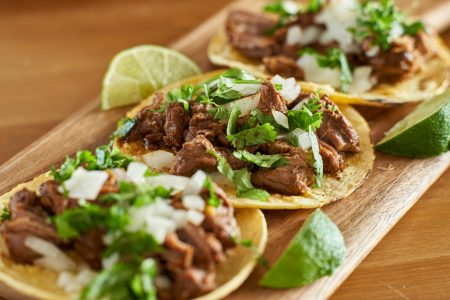

Los tacos mexicanos son una popular receta de
este país americano.
Consiste en carne, generalmente de ternera (o res como lo llaman allí) o de pollo, cocinada junto a tomate y después introducida dentro de una tortilla de maíz o trigo.
Finalmente se adereza con pico de gallo, una salsa típica del país.
Un plato con mucha personalidad y que sin duda sabe a méxico.
Aquí, lo haremos con carne picada aunque, en realidad se hace con trozos de carne cortadas en tiras, cocinada durante dos horas o más.
Así que se puede decir que aunque se parezca, no es 100% mexicana.
Pero para acelerar el proceso que, todos tenemos unas vidas muy ajetreadas ¡haremos una versión mucho más rápida e igualmente sabrosa!
INGREDIENTES
- 250 grs de carne: puede ser peceto, nalga, la que más te guste
- 1 cebolla morada mediana
- 2 dientes de ajo
- 1 tomate mediano
- 1/2 pimiento o morrón rojo
- 1/2 pimiento o morrón verde
- Jugo de 1 lima o limón
- Orégano
PROCEDIMIENTO
- Cortar los morrones y la cebolla en juliana, el ajo y el chile bien bien pequeño y el tomate en cubitos. Reservar por separado.
- Cortar la carne en tiritas y en un bol salpimentar, agregar la mitad del zumo de lima o limón y dejar macerando unos 20 minutos.
- En una sartén poner un chorro de aceite, el chile seco y el orégano y calentar unos 2 o 3 minutos. Agregar el ajo y el chile y sofreír unos minutos más.
- Agregar la carne y saltear. Después de 5 minutos, a mitad de cocción, sumar el tomate y terminar de cocinar.
- Por otro lado, saltear el resto de las verduras hasta que estén cocidas pero OJO: que estén firmes.
- Mezclar las dos preparaciones y rectificamos con sal y pimienta de ser necesario. Le agregamos el resto del zumo de lima o limón y el cilantro deshojado.